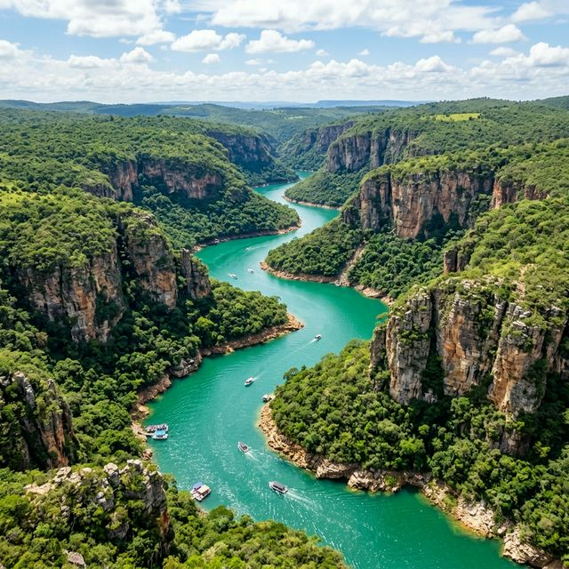
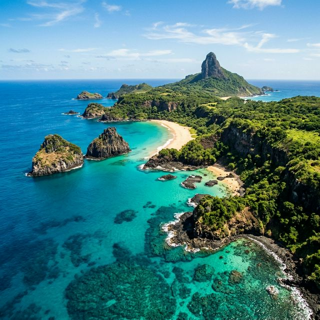
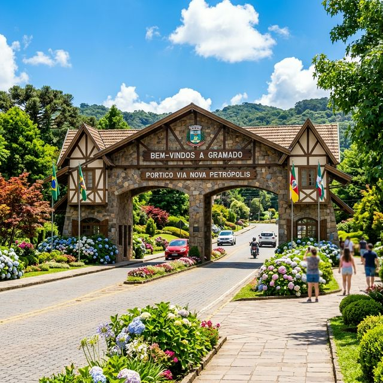
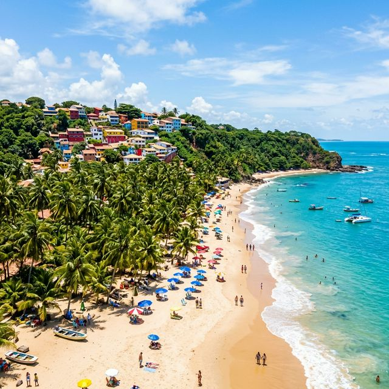

Capitólio (MG)
Descubra os majestosos cânions e o incrível Mar de Minas, navegando pelas águas cristalinas de furnas.
Selecione um dos destinos incríveis abaixo e embarque na viagem dos seus sonhos. Oferecemos pacotes com passagens, hospedagem e passeios.

Descubra os majestosos cânions e o incrível Mar de Minas, navegando pelas águas cristalinas de furnas.

O arquipélago mais famoso do Brasil. Um refúgio ecológico com praias paradisíacas e vida marinha rica.

Sinta o clima gostoso da serra gaúcha, experimente os chocolates artesanais e encante-se com a arquitetura europeia.

Muita história, praias quentes e agito. O lugar onde o Brasil foi descoberto, agora perfeito para você se descobrir.
A Cidade Maravilhosa! Desde o Pão de Açúcar até Copacabana, um local que mistura natureza com ritmo carioca urbano.